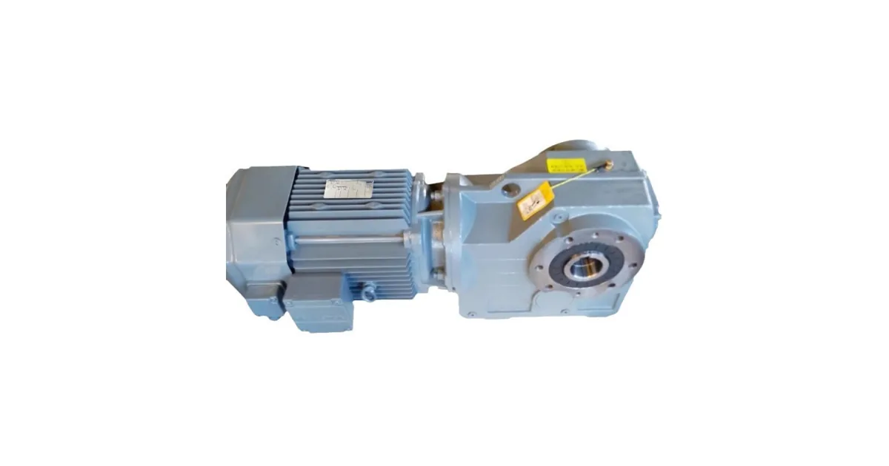

Собственное производствоПромышленные редукторы для производителей оборудования•Отгрузка по всей России•Аналоги SEW, NORD, Bonfiglioli без переделки рамы•Расчёт и КП за 15 минут•Гарантия 36 месяцевПромышленные редукторы для производителей оборудования•Отгрузка по всей России•Аналоги SEW, NORD, Bonfiglioli без переделки рамы•Расчёт и КП за 15 минут•Гарантия 36 месяцев
Flender серия B — коническо-цилиндрические редукторы B2–B4: расшифровка, момент, подбор замены
Flender серия B — тяжёлые коническо-цилиндрические редукторы: первая ступень коническая, она разворачивает поток мощности на 90°, дальше идут цилиндрические ступени. Цифра после буквы — общее число ступеней: B2, B3, B4. Типоразмеры 03–14, номинальный момент от 3 600 до 113 000 Н·м, передаточные числа от 5 до 400.

Типовое исполнение коническо-цилиндрического редуктора с разворотом валов на 90°
Что такое серия B у Flender
Буква B обозначает коническо-цилиндрический редуктор. Первой в кинематической цепи стоит коническая пара — она поворачивает поток мощности на 90°, поэтому входной вал расположен перпендикулярно выходному. Дальше момент идёт через цилиндрические ступени, которые и добирают основное передаточное число.
Такая компоновка нужна там, где двигатель физически некуда поставить вдоль оси механизма: приводы конвейеров в узких галереях, мешалки и реакторы, аэраторы, вращающиеся печи, барабанные и ковшовые машины. Разворот на 90° экономит место и часто позволяет обойтись без дополнительной угловой передачи в приводе.
Цифра после буквы — общее число ступеней с учётом конической. У B2 это коническая плюс одна цилиндрическая, у B3 — коническая плюс две цилиндрические, у B4 — коническая плюс три цилиндрические. Остальные символы обозначения (вид выходного вала, монтаж, типоразмер) разобраны на странице обозначение Flender.
Серии B2, B3, B4 — момент, передаточные, типоразмеры
Ряды серии B по каталогу Flender MD 21.1
Обозначение
Число ступеней
Типоразмеры
Номинальный момент, Н·м
Передаточное число i
B2
2
04–14
6 200 – 101 000
5…22,4
B3
3
03–14
3 600 – 113 000
12,5…90
B4
4
05–14
11 600 – 113 000
80…400
Источник данных по сериям — каталог Flender MD 21.1 FLENDER GEAR UNITS и инструкции по эксплуатации BA 5010 / BA 5032 / BA 5091.
Диапазоны передаточных чисел перекрываются по краям: 5…22,4 у B2, 12,5…90 у B3, 80…400 у B4. Это значит, что в зонах перекрытия (около 12,5…22,4 и около 80…90) одно и то же передаточное можно получить и меньшим числом ступеней в более крупном корпусе, и большим числом ступеней в корпусе поменьше. Первый вариант обычно выигрывает по КПД, второй — по массе и цене. Что выбрать, решает расчёт под конкретный режим.
B3 — самая широкая по типоразмерам серия (03–14) и самая распространённая на практике: три ступени закрывают типовые для промышленного привода передаточные 12,5…90 при моменте до 113 000 Н·м.
Пример: как читается B3SH11
Обозначение Flender строится по формуле: тип · число ступеней · вид выходного вала · монтаж · типоразмер. Разберём типовой код:
Обратите внимание: буква H встречается в обозначении в двух разных ролях — как тип редуктора на первой позиции и как признак монтажа на четвёртой. Читать её нужно строго по месту в коде.
Как подобрать замену редуктору Flender B
Таблицы «модель Flender → наш типоразмер» у нас нет, и мы её не придумываем: на моментах в десятки тысяч ньютон-метров такое соответствие без расчёта — прямой путь к отказу привода. Порядок работы такой:
фото шильда — обозначение целиком, передаточное, момент или мощность, заводской номер;
габаритный чертёж или обмеры: высота оси, положение конического входа, диаметр и вылет выходного вала, схема крепления, см. габаритно-присоединительные размеры;
режим работы: часы в сутки, пуски, ударность, реверс, температура — из этого считается сервис-фактор;
предварительный подбор — калькулятор, точный — расчёт инженера по заявке.
Без обещаний «один в один». Серия B — это тяжёлый промышленный класс до 113 000 Н·м, а не общепромышленные мотор-редукторы. По части типоразмеров решение серийное, по верхним моментам — индивидуальный расчёт и изготовление под чертёж. Общий подход к замене импортного привода — в разделе импортозамещение, ориентиры по стоимости — в разделе цены, весь бренд — в разделе Flender.
Замену подбираем по шильду и габаритному чертежу — раздел Flender
Частые вопросы: Flender серия B
Что такое Flender серия B?
Flender серия B — коническо-цилиндрические редукторы: первая ступень коническая и разворачивает поток мощности на 90°, дальше идут цилиндрические ступени. Цифра после буквы — общее число ступеней: B2, B3, B4. Типоразмеры 03–14, момент от 3 600 до 113 000 Н·м.
Как расшифровать B3SH11?
Обозначение строится по формуле «тип · число ступеней · вид выходного вала · монтаж · типоразмер». B3SH11 — коническо-цилиндрический редуктор, три ступени, сплошной выходной вал, горизонтальный монтаж, типоразмер 11.
Чем B2 отличается от B4?
Числом ступеней и диапазоном передаточных чисел. B2 — две ступени, i от 5 до 22,4, момент 6 200–101 000 Н·м. B4 — четыре ступени, i от 80 до 400, момент 11 600–113 000 Н·м. B3 занимает промежуточное положение: i от 12,5 до 90 при моменте 3 600–113 000 Н·м.
Какие типоразмеры бывают в серии B?
По каталогу MD 21.1: B2 — типоразмеры 04–14, B3 — 03–14, B4 — 05–14. Самая широкая по ряду и самая ходовая серия — B3. Номер типоразмера задаёт габарит корпуса и несущую способность.
Чем заменить редуктор Flender серии B?
Замена подбирается по шильду и габаритному чертежу с проверкой момента, передаточного числа, монтажного положения и режима работы. Готовой таблицы соответствий с нашими типоразмерами нет: часть позиций закрывается серийными изделиями, по верхним моментам считаем индивидуально.
Как оформить заказ?
Заявка через сайт, письмо на zr@zavod-red.ru или звонок менеджеру. Для юрлиц — счёт по реквизитам, для частных лиц — оплата картой.
Какая доставка по России?
Любой транспортной компанией до терминала или двери; отгрузка со склада в Челябинске за 1–3 дня, упаковка — обрешётка.
Как подобрать редуктор под задачу?
Нужны: мощность двигателя, обороты на входе и выходе, крутящий момент, режим работы. Инженер рассчитывает типоразмер и передаточное число.
Какая гарантия на редуктор?
36 месяцев с даты отгрузки. Паспорт изделия, декларация ЕАС, сертификат ГОСТ. При заводском дефекте — замена по договору.
Flender серия B — коническо-цилиндрические редукторы B2, B3, B4: расшифровка обозначения (пример B3SH11), число ступеней, типоразмеры 03–14, номинальный момент до 113 000 Н·м, передаточные числа 5…400. Подбор замены по шильду и чертежу, расчёт от Завода Редукторов (ООО «НИИ АТТ», Челябинск).
Партнёрская программа завода
Инженерам и проектировщикам — 5% с заказа
Рекомендуете наши редукторы коллегам, заказчику или своему отделу снабжения? За каждый состоявшийся заказ по вашей рекомендации выплачиваем 5% от суммы — реферальное вознаграждение переводом на карту. Прозрачный договор, работа со снабженцами и проектными отделами напрямую, отгрузка от производителя (ООО «НИИ АТТ», Челябинск).